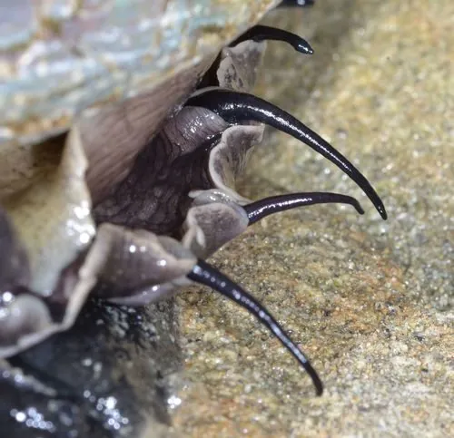

软体动物 · 动物界
红鲍 Haliotis rufescens

壳面砖红、体型最大的鲍类，栖于加州至墨西哥的岩礁海藻林，生长缓慢，是重要的养殖与捕捞对象。
- 分类
- 门软体动物门纲腹足纲目原始腹足目科鲍科属鲍属
- 栖息环境
- 岩礁海岸潮下带的海藻林边缘与岩缝
- 地理分布
- 美国俄勒冈州南部至墨西哥下加利福尼亚的岩礁海岸
- 保护级别
- 野生种群受捕捞与枯萎病影响，以人工养殖和资源修复为主
物种志
红鲍是已知体型最大的鲍类，壳长可达二十五至三十厘米。壳形椭圆，壳面砖红至暗红色，常有波浪状隆起，壳缘的呼吸孔略高出壳面，孔数约四至七个。壳内面呈银白带虹彩的珍珠层，中央有宽大的肌肉痕。足部肥厚，吸着力强，受到惊扰时会把壳紧紧压在岩石上，几乎无法移动。
它分布于美国俄勒冈州南部至墨西哥下加利福尼亚的岩礁海岸，栖息在潮下带的海藻林边缘和岩缝中，以巨藻、海带等大型褐藻为食。它生长缓慢，需要数年才能达到可捕规格，性成熟也较晚。由于肉质肥厚、味道鲜美，它长期是加州重要的捕捞与养殖对象，野生种群受捕捞和枯萎病影响明显，如今主要依靠人工育苗和海藻林修复来维持资源。
形态与习性
- 壳长可达二十五至三十厘米，鲍类中最大
- 壳色砖红至暗红，有波浪状隆起
- 呼吸孔壳缘四至七个，略高出壳面
- 食性以巨藻、海带等大型褐藻为食
- 生长缓慢，需数年达到可捕规格
- 利用加州重要捕捞与养殖对象
趣味知识
- 它是世界上最大的鲍，壳能长到三十厘米，比一只盘子还大。
- 它吃的巨藻林是海底森林，海藻少了，红鲍就长不大。
- 它生长极慢，长到能上桌的个头要好几年，过度捕捞后很难恢复。